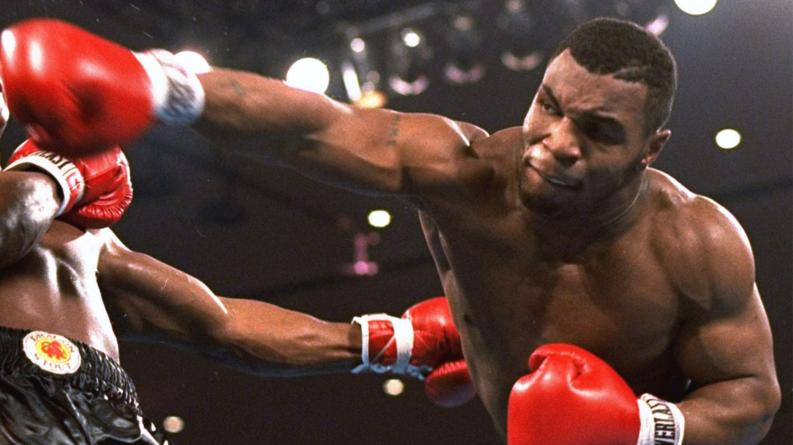
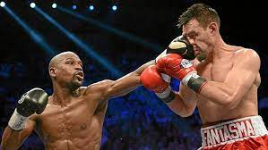
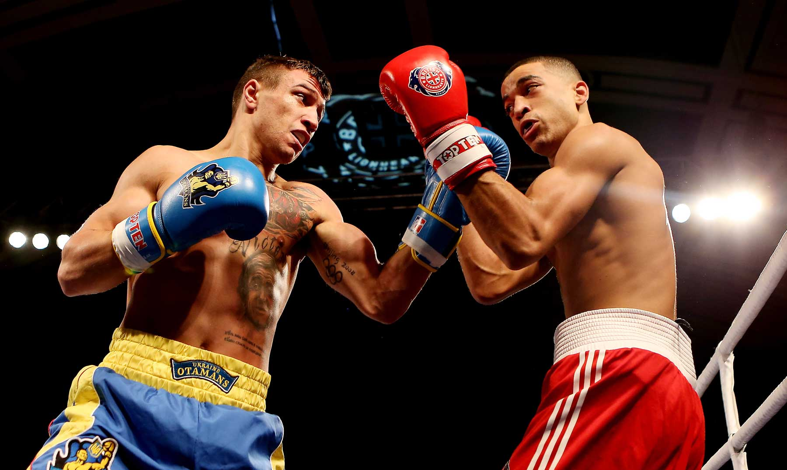

BOXEO DEFINICION
 El boxeo es un tipo de deporte de contacto físico conocido a nivel mundial en el cual dos personas se enfrentan luchando. Es un deporte de carácter olímpico que además cuenta con una serie de torneos a nivel mundial durante el año por medio de los cuales los boxeadores intentan mantener sus marcas y primeros lugares. Un deporte que ha sido practicado en su mayoría por hombres pero que, con el paso del tiempo, ha ganado un lugar en el campo femenino. De acuerdo a los historiadores, el boxeo es un deporte que tuvo sus inicios en Inglaterra, a inicios del siglo XVIII. Se originó como resultado a la búsqueda de un término que pudiera diferenciar las luchas que se daban en la época siguiendo una serie de reglas y las peleas que se producían en las calles para resolver conflictos personales. Las primeras reglas que vinieron a regular este deporte se originaron en el año 1743 y el uso de guantes como medida protectora se dio en el año 1889.
PELEA INTERNACIONAL
Una gran pelea a nivel mundial en la cual se pelearon dos grandes boxeadores, llegaron a derramar sangre los dos pero despues de mucho esfuerzo,y la decision unanime de los jueces se lo llevo el combate la esquina roja.